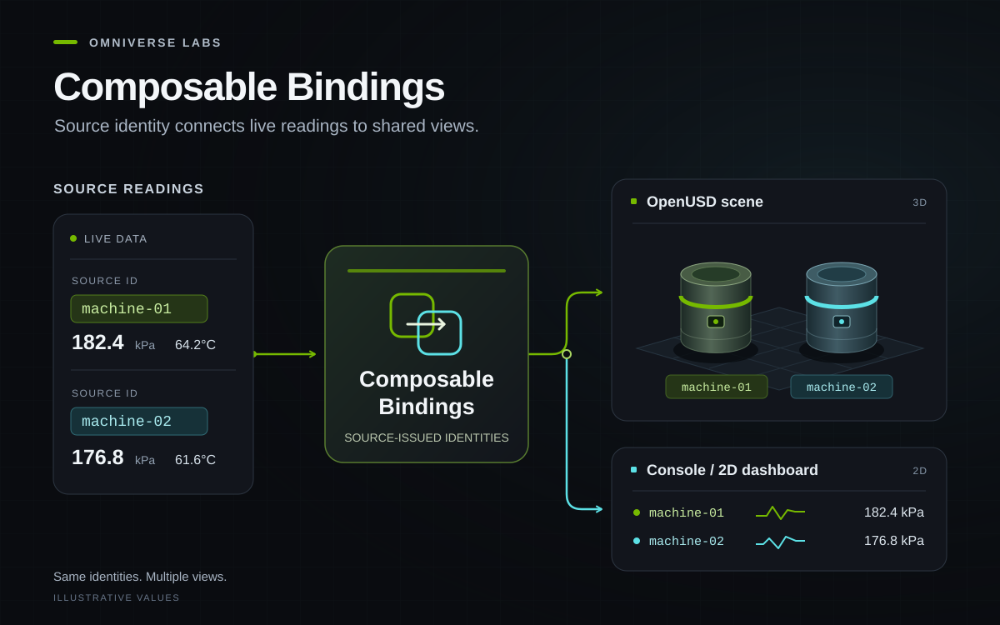

Sample
Composable Bindings Reference Sample
Connect operational data to the assets in your OpenUSD digital twin. This runnable reference demonstrates a reusable integration pattern for linking live data to equipment while keeping data sources and applications separate.

An operational digital twin needs a way to relate data from external systems to the assets in its OpenUSD scene. This reference sample demonstrates that connection through source-issued identities, keeping operational data separate from the saved scene and its visual presentation.
Use it as a starting point for your own data sources, equipment and applications. Following the live-data pattern in the Composable Bindings white paper, the sample separates data production, event enrichment and visualization. Its adapter, configuration and shared client show where to connect a different source, bind your own USD assets or build another application.
Two simulated machines and their production line publish measurements. An edge service preserves their identities and adds threshold alarms. A console, an Omniverse Kit view and an optional 2D ovui dashboard consume the same results through a shared Python client. The included machine data and geometry are synthetic.
What you can explore
- Connect data to assets: associate OpenUSD prims with the issuing system’s equipment IDs, independently of scene paths.
- Adapt the example: add a metric, change thresholds or supported displays, and try a second source with the supplied JSON adapter.
- Reuse the data connection: consume the same measurements and alarms through a shared Python client, with console, Kit and optional ovui examples.
- See live values in 3D: select equipment to show gauges and watch pressure-driven cylinder colors update in a temporary USD layer.
- Capture and replay: record the live stream locally and inspect the recording with Kit’s timeline controls.
How the binding works
A USD prim carries an ID issued by its data source in assetInfo.sourceIds.<source>.id. The client uses that identity to associate incoming readings with the scene asset. This sample convention follows the direction described in OpenUSD proposal #105; it is not a standardized binding schema.
Operational readings remain in the data service. Kit derives gauges and temporary display colors from those readings while leaving the saved USD asset unchanged. The architecture guide explains the separation of sources, enrichment, delivery and clients.
Get started
The service and console require Python 3.9 or later on Windows or Linux, with no extra Python packages. For 3D visualization, add an installed Kit SDK and a compatible GPU. The optional ovui dashboard uses Python 3.12 and its own UI dependencies.
Clone the repository and open the sample folder:
git clone https://github.com/NVIDIA-Omniverse/omniverse-labs.git
cd omniverse-labs/samples/composable-bindings-reference-sampleOn Linux, run these from the sample folder in separate terminals:
# Terminal 1: service and simulated producer
./run-services.sh
# Terminal 2: live console reader
python3 reference.py console
# Terminal 3: optional 3D view, with Kit installed
./run-kit.shOn Windows, use PowerShell terminals from the same folder:
# Terminal 1: service and simulated producer
python reference.py demo --no-console
# Terminal 2: live console reader
python reference.py console
# Terminal 3: optional 3D view, with Kit installed
.\run-kit.batSet KIT_ROOT to your Kit SDK installation if the launcher does not find it. The full tutorial covers setup, expected results, selection, configuration, recording and shutdown. Use the ovui guide for the optional 2D dashboard.
Use your own data and scene
Start with the second-source adapter guide to map an external JSON payload into the sample’s source contract, and the USD binding guide to associate source IDs with your own scene. The configuration guide shows how to keep event declarations, simulation, alarm rules and display settings separate.
Scope and limitations
This is a small reference implementation with synthetic inputs, not a production broker or certified protocol stack. Capture replay uses the sample’s locally recorded live stream; querying historical records from a source system is not implemented. Console and ovui remain live while Kit replays a capture. Omniverse Labs samples have no support SLA and may change without notice.
Source and maintainer
Source: samples/composable-bindings-reference-sample/
Maintainer: Min Jiang · minj@nvidia.com
License: NVIDIA-authored sample code is licensed under Apache 2.0. See third-party notices for optional runtimes and dependencies.